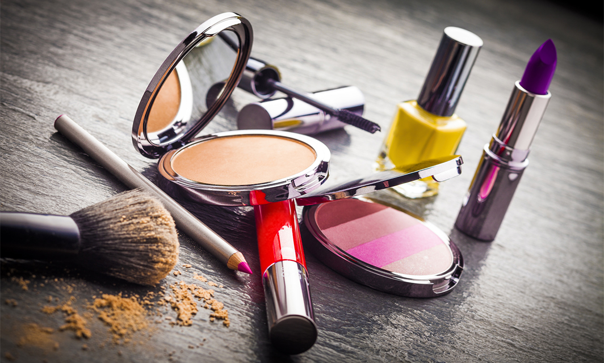

pros y contras
Pros (Ventajas)
Ingredientes de mayor calidad: Suelen contener ingredientes refinados, activos para el cuidado de la piel, antioxidantes y vitaminas que mejoran la apariencia cutánea a largo plazo.
Fórmulas superiores y rendimiento: Suelen ser más fáciles de difuminar, ofrecen mejor pigmentación y tienen una mayor duración (larga duración) sin necesidad de retoques frecuentes.
Acabado más natural: Las bases de lujo tienden a fundirse mejor con la piel, evitando el efecto "máscara" y proporcionando un aspecto más natural.
Empaques y aplicadores premium: Los envases suelen ser más resistentes, estéticos y funcionales (lujo funcional), incluyendo a veces mejores aplicadores.
Tecnología e innovación: Las marcas de gama alta a menudo invierten más en investigación y desarrollo, creando patentes y fórmulas únicas que no tienen equivalente económico.
Menos riesgos de alergias: Al utilizar ingredientes más refinados y pasar controles de calidad más rigurosos, suelen ser más seguros para pieles sensibles.
Contras (Desventajas)
Precio elevado: El coste es la principal desventaja, lo que hace que la reposición de productos sea un gasto significativo.
Marketing y empaque inflan el precio: Una parte considerable del precio se debe al marketing, la marca y el empaque lujoso, no necesariamente a la calidad del producto en sí.
No siempre superan a opciones asequibles: En muchos casos (como máscaras de pestañas o algunos labiales), productos de farmacia ("dupes") pueden rivalizar en rendimiento con marcas de lujo.
Formulaciones no aptas para todas: A veces, las fórmulas de lujo son muy específicas y no funcionan bien en todos los tipos de piel (por ejemplo, demasiado aceitosas para pieles grasas).
Riesgo de falsificaciones: Al ser costosos, el mercado de "clones" o réplicas (falsificaciones) aumenta, lo que puede ser peligroso para la salud al no cumplir normas de higiene. )
